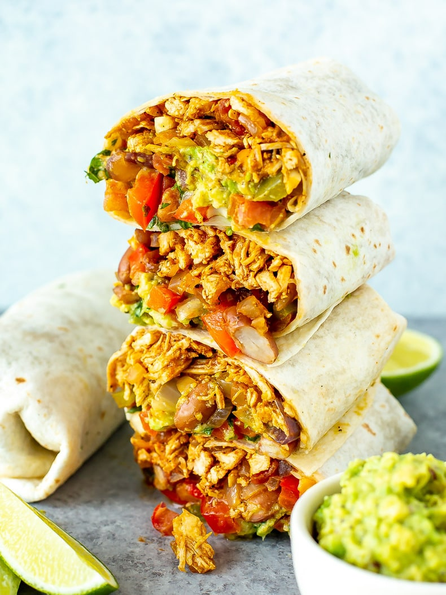

Sriracha Chicken Burrito

Description
Sure, we all are basic at our core. But what if I told you that instead of getting Chipotle, you could make a homemade burrito that tastes just as good (and is a fraction of the cost)?
"Blasphemy!", you might say. But when the rational part of your brain comes to, revisit this recipe if you want to make your own delicious burritos from scratch. Plus, we even throw in Sriracha for an extra kick! Does that make this even more basic?
Ingredients
- 2 pounds of chicken, diced
- 1 cup of rice
- 1 can of black beans, drained
- Tortillas (flour or corn)
- Sriracha, to taste
Steps
- Cook rice to start so that it is ready by the time everything else is ready to eat.
- Dice chicken into bite-sized pieces and brown in saucepan.
- While chicken is cooking, cook black beans in a separate saucepan.
- When rice, chicken, and black beans are fully cooked, heat tortilla in microwave. 15 seconds is usually good enough.
- Combine ingredients in the tortilla and add Sriracha and other seasonings to taste. Wrap the burrito and eat when done!